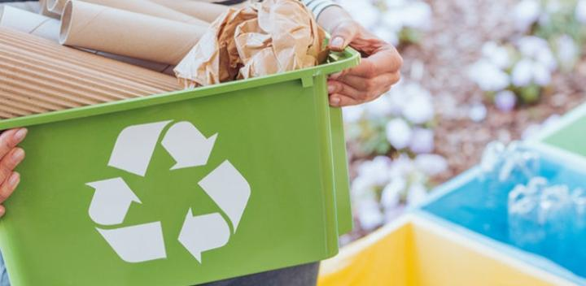
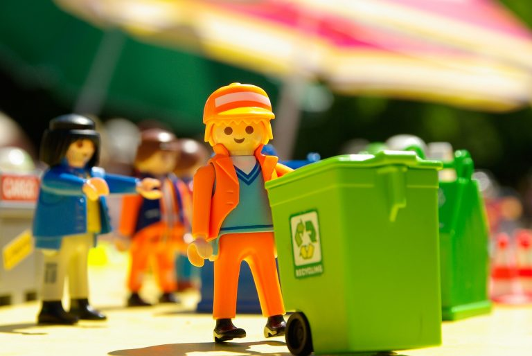

COMO FAZER: DESCARTE CORRETO DO PLÁSTICO
Nas condições preocupantes e atuais que o planeta se encontra, a reciclagem não é mais uma opção, e sim um
dever de cada um como cidadão consciente no mundo.
Mesmo assim, muita gente não faz o descarte correto do plástico. E não é nem por maldade, mas por falta de
conhecimento e por acreditar que é muito caro e complicado.

Muito essencial em nossa vida, o plástico não deve ser visto como o vilão – se consumido de forma responsável e reciclado corretamente, esse material só tem a nos ajudar no dia a dia!
Um dado alarmante é que, por ano, 8 milhões de toneladas do plástico vão parar nos nossos oceanos, isso porque muitos ainda negligenciam o descarte correto. Esse ato impacta diretamente na vida marinha, com animais ingerindo o composto e morrendo por causa disso.
E nós podemos fazer a diferença na vida desses animais ao descartar corretamente o plástico. Aliás, em todo ecossistema, inclusive nós mesmos. Quando comemos peixe, por exemplo, podemos estar ingerindo as mesmas toxinas que ele consumiu do plástico nos oceanos.
SAIBA 7 BENEFÍCIOS DO DESCARTE CORRETO DO PLÁSTICO
1 Previne impactos ambientais e mantém o equilíbrio em todos os ecossistemas da Terra;
2 Gera mais consumo consciente, uma vez que você compreende os riscos do descarte incorreto e de como ele afeta nosso planeta;
3 Incentiva empresas e cooperativas a continuarem trabalhando com materiais recicláveis;
4 Cria mais oportunidades de empregos, principalmente para famílias de baixa renda;
5 Gera economia nos nossos recursos naturais;
6 Trabalha a conscientização global, uma vez que todos cidadãos se propõem a fazer a mesma coisa pelo planeta;
7 O plástico reciclado pode ser usado em sistemas de geração de energia solar e fotovoltaica.
O DESCARTE
Em casa:
É importante ter um recipiente só para o plástico. Por preguiça e até mesmo “falta de tempo”, algumas pessoas preferem misturar todo o lixo, mas não custa um segundo descartar o plástico em uma lixeira ao lado.
Aliás, essa é uma tarefa divertida para as crianças! A cada vez que ajudarem a colocar o lixo no lugar correto, incentive-as dando pontos!
Quando estiverem acumulados, dê algum prêmio para elas, passeios no parque, ingressos para o cinema, etc. Dessa maneira toda família estará engajada no descarte correto do plástico.
No trabalho:
Se na empresa que você trabalha ainda não há a separação de lixo, converse com a equipe do RH para mudar isso o mais rápido possível.
Como passamos a maior parte do nosso tempo dentro do escritório, a produção de lixo se torna enorme. E o uso diário de copos e objetos descartáveis faz com que essa necessidade cresça ainda mais. Deixar esses descartáveis de lado e trocá-los por canecas, por exemplo, também é uma boa atitude.
No mercado:
Reduza o número de sacolas plásticas, caso você as utilize em suas compras. Um jeito simples de evitar o desperdício é redistribuindo mais itens em uma única sacola.
Depois do mercado, reutilize as sacolinhas como sacos de lixo em casa, para evitar a compra de mais material plástico. Se quiser substituir as sacolas, carrinhos de feira são uma boa opção!